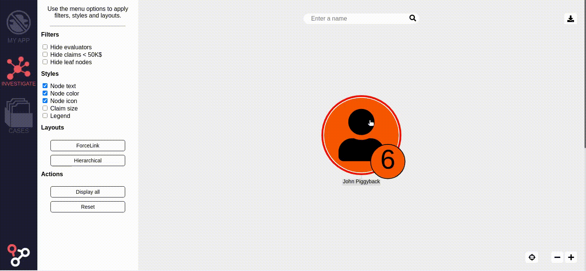

How to handle large Datasets with
What to do with a large Dataset ?
- Exploration
- Global Visualisation
- Targeted Visualisation
Exploration


Exploration requires
- Precise requests
- Expand feature
Problems
- Loading
- Layout
- Rendering
Loading
- Load by chunks
- Load smartly
Load by chunks
// setGraph
ogma.setGraph(myGiganticGraph1, {batchSize: 1000});
// addGraph
ogma.addGraph(myGiganticGraph2, {batchSize: 1000});
// addNodes
ogma.addNodes(myNumerousNodes, {batchSize: 1000});
// addEdges
ogma.addEdges(myNumerousEdges, {batchSize: 1000});
Load by chunks
Load Smartly
//setGraph
api.get('just-what-i-need')
.then((justWhatINeed) => {
ogma.addGraph(justWhatINeed, {batchSize: 1000});
})
Clean up your graph
//setGraph
const nodeData = ogma.getNodes().get(0).getData();
const isHeavy = JSON.stringify(nodeData).length > 2500;
Rendering
- Limit the number of style rules
- Limit the number of curved edges
Style rules
Curved Edges
Layout
- Optimize the layout calls
- Store the positions
- Node pinning
Optimize the calls
Examples
ogma.layouts.force({
autoStop: true
})